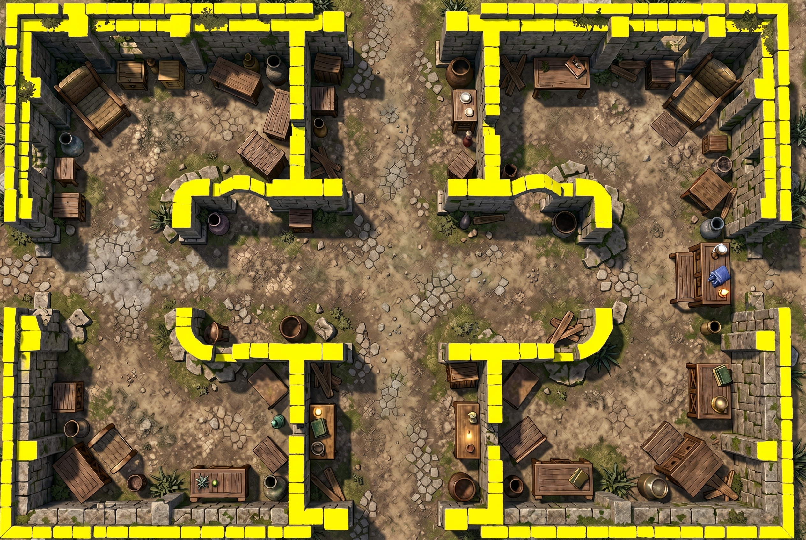
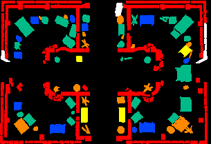

Raised walls + an AI elevation map
The original courtyard art stays on the surface. The yellow mask defines wall footprints; a separate Gemini pass estimates heights. Drag to rotate, pinch to zoom.
Loading…
The elevation pass is an estimate, not measured survey data. It can misidentify heights or footprints. Furniture relief is a raised surface, so it cannot reproduce table legs or overhangs. Wall footprints and door gaps come from the existing wall-mask converter. This preview does not change a campaign.
Separate API outputs

Accepted structural wall prompt Raw elevation response
Raw elevation response
Converted data: black 0 ft · blue ½ ft · green 1 ft · yellow 2 ft · orange 4 ft · red 8 ft · white 12 ftThe API left some original art visible. Conversion only accepts pixels close to the data palette; unknown pixels stay at ground level. The wall mask is kept separate and unchanged.
Exact prompts and conversion receipt · Mask-derived wall shapes
Rotation comparison
Open / download video